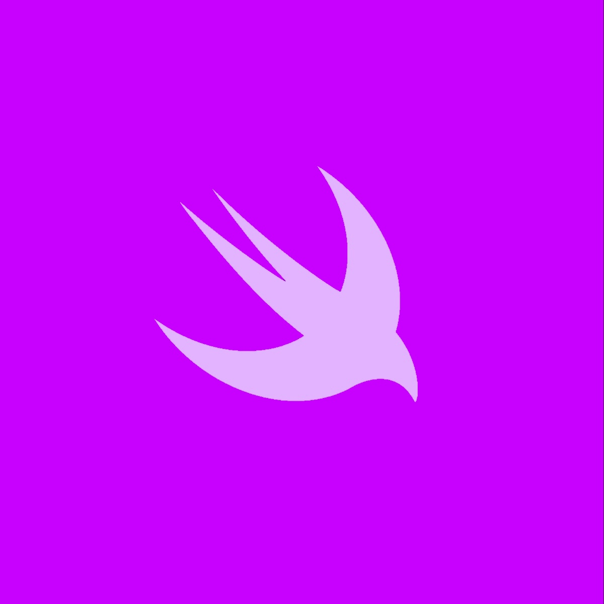

10, Jan 2024
Swift: Closures
Closures are self-contained blocks of code that can be passed around and executed at a later time. It's a way to treat a piece of executable code as a variable that you can store just like you would a string or an int; this can lead to more concise, expressive, and reusable code. Let's explore what closures are, how to define them, and when they're most beneficial.

Understanding Closures
A closure is a self-contained block of code that can capture and store references to variables from the surrounding context. Closures can be used as arguments to functions, returned from functions, or assigned to variables.
let increment = { (x: Int) -> Int in
return x + 1
}
let result = increment(5)
In the above example, the `increment` closure captures the `x` parameter and returns a new value that is one greater than `x`. Note the syntax of the closure declaration. The type of closure itself is inferred. The above code is equivalent to the following:
let increment: (Int) -> Int = { x in
return x + 1
}
let result = increment(5)
Here, we explicitly declared the type of the closure.
Closure captureClosures can capture variables from their surrounding context. This means that they can access and modify variables that are defined outside of the closure's body.
var counter = 0
let increment = {
counter += 1
return counter
}
let result1 = increment()
let result2 = increment()
Not only did the closure work as expected, Swift automatically inferred the type of the closure as taking no arguments and returns an int. Remember that when capturing objects in a closure, you'll have to be very careful to consider sound memory management principals. By default, closures capture strong references for classes which may lead to circular referencing (memory leaks). Declare weak references to objects with capture lists:
class ExpensiveClass {
func somethingExpensive() {
print("Doing something expensive")
}
}
var expensiveObject = ExpensiveClass()
let doSomethingExpensive = { [weak expensiveObject] in
guard let expensiveObject = expensiveObject else { return }
expensiveObject.somethingExpensive()
}
doSomethingExpensive()
Declaring the capture list as `[weak expensiveObject]` turned `expensiveObject` into an optional. This means that the closure will not hold a
strong reference to the object, so that when all references to the object are released, it'll become
nil when the closer is executed after its release.
 Closure expressions
Closure expressionsClosure expressions are a concise way to define closures. They can be used to create inline functions without explicitly defining a named function.
let numbers = [4, 5, 2, 5, 7, 2, 6, 3]
let sortedNumbers1 = numbers.sorted { $0 < $1 }
let sortedNumbers2 = numbers.sorted(by: { (n1, n2) in
return n1 < n2
})
print(sortedNumbers1) // Equals
print(sortedNumbers2) // Equals
The shorthand version used for
sortedNumbers1 is exactly the same as for
sortedNumbers1. Notice how we used `$0` and $1`, these are known as anonymous closure parameters.
**Capturing `self`*•
When a closure is defined within an instance method, it can capture `self`. This means that the closure can access and modify the instance's properties.
class MyClass {
var value = 0
func doSomething() {
let closure = {
self.value += 1
}
closure()
}
}
It's usually here where many memory leaks take place, imagine if the closure is strongly held by the instance, and the closure holds a strong reference of the instance. This is why usually, it's preferred to use a capture list of `self` as a weak reference as described previously.
Escape closuresEscape closures are closures that outlive the function in which they are defined. If a closure is escaping, it must be marked as `@escaping`.
@@@swift
class MyClass {
var dynamicFunction: (() -> Void)? = nil
func setDynamicFunction(newDynamicFunction: @escaping () -> Void) {
dynamicFunction = newDynamicFunction
}
}
@@@
In this example we took the value of `newDynamicFunction` and assigned it to a variable outside the scope of `setDynamicFunction`. If `newDynamicFunction` is executed immediately within the function, there is no need for `@escaping`:
class MyClass {
var dynamicFunction: (() -> Void)? = nil
func setDynamicFunction(newDynamicFunction: () -> Void) {
newDynamicFunction()
}
}
Something interesting to note, passing an optional closure type makes it escaping by default, so we may write the first example like this instead:
class MyClass {
var dynamicFunction: (() -> Void)? = nil
func setDynamicFunction(newDynamicFunction: (() -> Void)?) {
dynamicFunction = newDynamicFunction
}
}
Closures are a powerful tool in Swift that can help you write more concise, expressive, and reusable code. By understanding how to define and use closures effectively, you can leverage the benefits of functional programming in your Swift projects. Remember to use closures judiciously and follow best practices to ensure your code is maintainable and easy to understand.